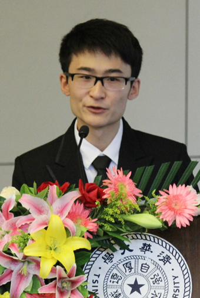

我是胡泽，来自新闻与传播学院新法9班，清华大学第三届文科国防班。
提起国防生，人们常常与 “思想红，能吃苦，学习好，身体强，办事稳”联系起来。这是清华国防生的优良形象，也是所有国防生们努力的目标。清华国防生的传统和精神需要我们继承，也需要我们添加新的理解，拓展它的外延，深化它的内涵。
一个文科背景的国防生，要怎样才会更优秀？这是我大学三年思考的问题。
我想，21世纪需要的是能够适应我军现代化高速发展的强军人才。对于国防生，尤其是文科国防生，不仅需要深厚的人文基础，全面的学科背景，扎实的专业素养，还需要宽广的国际视野，良好的沟通交流能力和勇于创新的探索精神。这也是时代对于国防生的新要求和新定位。三年来，我在不断的思考与探索中让自己逐渐成长起来。
大一学年担任团支书一职，让我三年的生活重心向“新法九”这三个字无限偏移。跟17位兄弟姐妹们经历过军训与集训，彼此间更加真诚、信任。正是在这个集体里，我们畅谈自己的理想，我的观点也得到了最初的肯定。全心全意付出，废寝忘食工作，让我不仅出色地完成各项班团工作，更和同学们建立了深厚的友谊。那句“新法九是18个人，也是1个人”让我终身受用，并愿意用为之守望、奋斗。这三年来，我始终把对同学、班级的关心放在与自身发展同等的地位。而反过来，这个集体因“统筹大局，兼顾每个人”对我产生了更大的吸引力和归属感，对我以后的发展奠定了坚实的基础。大一阶段，中文、法律、历史、哲学、国关、社会……我努力让自己涉猎的人文课程范围广泛，并从中检索一切和“新闻”、“军队”、“现代化”有关的知识点，努力理解、消化、备份并准备再次使用。
大二阶段，全面开始新闻专业和相关领域的学习尝试，同时加强体能训练。对新闻理论的重视让我在所有的新闻学理论课上收获第一名；对文科课程系统的梳理让我在哲学、国际关系、法学、社会学、美术学院高年级专业课上均获得过第一名；对舆论战的清晰认识和冷静思考让我在“三战”相关课程中位列第一。大二学年，在修英语双学位的同时，我的成绩进步至年级第二名。
大三学年，我延续大二形成的学习方法，加强军政素质训练，大范围从事新闻专业和舆论战的实习工作，让自己所学历经实践得到提高。从地市级广播电台（铜川人民广播电台）的主持人到省级机关报纸（《陕西日报》）的评论和特稿，从境内传媒机构到跨境传媒电视台（上海广播电视台香港站）的电视新闻专题，到新闻学术研究机构（国防大学“三战”研究中心）的军事课题，到国务院新闻机构（国务院新闻办公室）的舆情分析，三年以来我实习时间累计超过一年，完成30余篇电视新闻稿件核心部分，40余篇报纸新闻稿件的编辑、修改工作，在纸媒、电视媒体、网络媒体发表了数十篇稿件，并完成4项社科基金•全军重大项目和“十二•五”规划项目。
三年的时间十分短暂，不足以验证我的愿景，但我却清晰地知道，我离自己的理想正越来越近。在继承国防生优秀传统的同时，不断创新，扎实专业，拓宽视野，面向国际，成为符合部队现代化建设的文科国防生，肩负起我军打赢未来“舆论战”、“心理战”、“法律战”的使命。我希望自己能完成从军报国、戎马生涯的理想，为我军现代化建设奋斗一生，为加强军队舆论引导，完善军队宣传机制，促进中国军队形象建设、提升军队软实力做出贡献。
大学三年，积跬步以成千里。我用踏实进取的一点一滴去追逐理想。通过不断地思考、修正，自己在学术、专业、德育、身体素质各方面都有所成长。
【第1个出境交换的文科国防生】
作为清华大学首位出境交换的文科国防生，我于2012年春季学期在香港大学交换学习半年。
学术交流。交换期间，我利用学习和学术研究、境外媒体实习充分让自己接受不同国家、文化、背景的人们的观念和观点，在诸多领域（中国崛起和解放军形象等）多角度深入研究了西方学者的理论源流、理解模式、关注热点和叙事方式，参与了多个国际会议的研讨项目。中国崛起与东亚发展的论坛上，我跟美国的学生辩论中国崛起是威胁还是机遇？月度高桌晚宴（High Table）上，我跟香港司法部门的港大老学长辩论香港民主模式对大陆的影响。学生研讨组里，我同英国学生争论对西藏问题历史和现状的看法……我相信，21世纪的军队发展需要更全面广泛的国际视野，新形势下的舆论宣传需要更灵活的传播方式和叙事理念，而我也希望多多积累，早作准备，做好准备，为成为具有国际视野的现代化军人努力。
境外实习。在港交换期间，在上海广播电视台（SMG）香港记者站首席代表劳有林老师和高级记者俞华老师的带领下，我在上海电视台香港总部的《东方卫视》、《第一财经》、《新娱乐在线》频道实习三个月。期间我参与完成《胡锦涛主席访港》、《香港政府换届选举》”、《廉政公署新鸿基房产案》等30多篇重大专题新闻的核心部分。
思想政治。在港期间我参加了驻港部队开放日的活动，通过参观驻港部队的军营，与驻港战士沟通，与驻港部队新闻办公室同志谈话，增强了我对这支队伍的认同感，也加重了一名后备军官保家卫国的责任感与使命感。在港交换期间，我在涉及重大历史事件时始终与党保持着高度一致，认同党的相关文件精神，执行党的决议，保持共产党员应有的作风。此外，我坚持阅读马列主义的经典著作和当代中国特色社会主义的书籍，不断提高自己的理论修养。
【全国模拟新闻发言人大赛第2名】
顶着《南方周末》清华公共演讲比赛本科生第一的头衔，我代表清华大学参加2011年全国模拟新闻发言人大赛，与北京大学、人民大学等20余所高校的新闻学子同台竞争。新闻发言人对时事新闻热点、国家相关法律法规和政策、外交礼仪和外事礼节需要有深入的认识，并能通过严谨专业、富有逻辑、又不失活泼的语言能力把握全局，发布新闻，引导舆论。通过半年的准备和专业课程的学习，我在专业知识的熟练度和表达能力上有了进一步的提升，并一举获得了大赛第二名——这是清华历届得最好成绩。
颁奖典礼上，外交部发言人洪磊对我说：“新闻发言人要基础扎实、思维缜密，又要随机应变、游刃有余。你基本上具备了这项素质”。赛后，我受到外交部新闻司的邀请，观摩了多场外交部的例行新闻发布会。
新闻发言与演讲一直为我重视，从新生演讲比赛的院系第一和全校二等奖，到《南方周末》清华大学公共演讲比赛本科生第一名，我始终坚持提高自己的语言表达能力，积极参加各种学术赛事，为日后更好的传播我军形象，夺取国际传播的话语权打下基础。
【做最好，专业的新闻素养】
21门课程第一。专业学习始终是个人发展的基础。大学三年，我共有21门课程取得全年级第一的成绩，在所有涉及新闻学理论、军事学舆论战等课程上都取得第一名。所有新闻实务、采写课程均取得年级前三名。此外我兼修英语双学位以完善知识背景，所修学分超过同年级平均水平70%。
“全”媒体实习经历。我先后在铜川人民广播电台、《陕西日报》、上海广播电视台香港站、国防大学“三战”研究中心、国务院新闻办公室实习，担任过实习记者、实习编辑、研究助理等。从地市级广播电台的主持人到省级机关报纸的实习记者、编辑，从境内传媒机构到跨境传媒电视台的实习记者，到新闻学术研究机构的研究助理，到国务院新闻机构的舆情分析员，我努力让自己的实习经历包含更多领域的新闻内容。三年以来我实习时间累计超过一年，完成30余篇电视新闻稿件核心部分，30余篇报纸新闻稿件的编辑工作。此外我担任清华新闻网、《清新时报》、《紫荆》等校园媒体的记者和评论员，发表数十篇新闻稿件。
不断提高的学术研究能力。三年来我在报纸、杂志、电视、网络等多种形态的媒体上均有发表作品，在《求是》等核心期刊和新华社内参中亦有发表过论文。同时，我利用课余时间积极参加研究型课题，在课题的研究分析上，我始终愿意尝试多角度、多学科的交叉分析，这样能给我带来全新的认识，也能综合提升我的学术能力。在学术训练中，我尽力与军队相结合，参与全军“三战”军事教研项目，全国社科基金•青年项目，全军军事科研计划课题暨国家社科基金军事学项目和“十二·五”规划项目等的核心工作，与国防大学老师合作的专著也即将出版。学术永无止境，所以更让人留恋难舍。
【不断练，过硬的军政素质】
军政素质过硬是国防生应具备的基本素质。从新生军训17公里越野尖刀排的旗手到首都高校国防生防化学院的军政训练，都使我集中精力攻克了许多身体素质上的难关。每周的早操和体能训练更是让我保持良好健康的学习生活状态，尤其是新法9特殊的“1个5，5个1”项目，通过高强度的身体素质训练（包括5000米，仰卧起坐100，俯卧撑100，深蹲100，鸭子步100米，蛙跳100米）让我的身体素质有了突飞猛进的发展。即便在交换期间，我也积极主动参加港大曲棍球队的日常训练和体能专项，争取做到每日一练。
此外，延安革命教育基地的军政素质夏令营让我对我党我军的光辉传统有了新的认识，而相关理论课程的学习和书籍的阅读让我对党领导下的人民解放军有了更深的信仰。在港交换期间，我的转正期到，成为国防生中首位在境外通过转正的预备党员。除了转正申请外，我一同向组织上交了月度汇报，将我在港交换的思想、学习、活动作以总结，组织原则上通过了我的申请。
【每天做，公益志愿就是生活的一部分】
志愿奉献最能体现自己的价值，我将其视为生活的一部分。
在大一，我曾连续一星期每天志愿服务10小时以上，为2000余人提供过志愿服务。在大二，我作为优秀礼仪志愿者被选拔成为百年校庆礼仪志愿者，接待了刘延东等国家领导人。在大三，我在香港英皇书院辅导小学生们学习普通话，传播大陆形象。
交换结束后，我跟随北京市政府新闻办公室王惠前往7·21特大暴雨受灾最严重的周口店镇娄子水村娄子水完全小学。这所小学灾后损失惨重，仅清理出的淤泥就达4000多吨。如今，在政府和社会的关注下，娄子水小学正常开课，孩子们也重新走进教室。我和王惠主任为孩子们带去体育用品和书籍，跟孩子们一起上课、踢球。我和六年级一班的蔡国波小朋友还结成“一帮一”的互助对子，成为他的课外辅导员，鼓励他努力读书，刻苦学习。上周，他告诉我自己正在努力准备考试，之后还要考初中，考高中，并朝向他理想的大学——清华大学而奋斗。
每天都做点公益，即便是一个电话，一句加油，一声祝福。你的心和孩子们在一起，就是对他们最大的鼓励。
【走出去，文科国防生拓展国际视野】
两年前，作为中方学生代表，我曾赴美国哈佛大学肯尼迪学院交流访问，与肯尼迪学院的教授和学生们就中美关系进行了探讨和交流。我和威廉姆斯学院的亚当同学组织两校学生通过实时通讯定期进行交流沟通，就两国政府间的关系、经贸合作等共同关心的问题交流看法。回国后，我多次受美国大使馆北京美国中心的邀请参加中心的讲座、交流等活动。
今年年初，作为中方学生代表，受巴基斯坦外交部的邀请邀参加由清华大学李希光教授带队的中国大学生巴基斯坦访问团。我代表中方学生在巴基斯坦大使馆向马苏德·汗大使作会议报告，并对增进中巴青年的沟通交流提出自己的建议。
三年内，我先后参加了美国银行、大学，巴基斯坦政府、中国外交部、驻港部队等举办的许多对外交流活动，通过访问交流与沟通辩论，自己和不同国家、文化、背景的人们交换了观念和意见，也增进了彼此的理解与信赖，我既开拓了视野也提高了个人整体素质。我相信，21世纪军队的发展需要更全面广泛的国际视野，新形势下的舆论宣传需要更灵活的传播方式和叙事理念，而我也希望多多积累，早作准备，做好准备，为成为具有国际视野的现代化军人努力奋斗。
清华三年，我用一点一滴的踏实，不断地探索和创新，不断地反思总结，也不断坚定着自己的方向，提升了各项综合素质。在此我诚挚申请清华大学特等奖学金，并承诺在今后的人生道路上努力拼搏，实现自己的人生理想，为我军的现代化建设，中国军队的形象建设，提升我军的软实力奋斗终身！